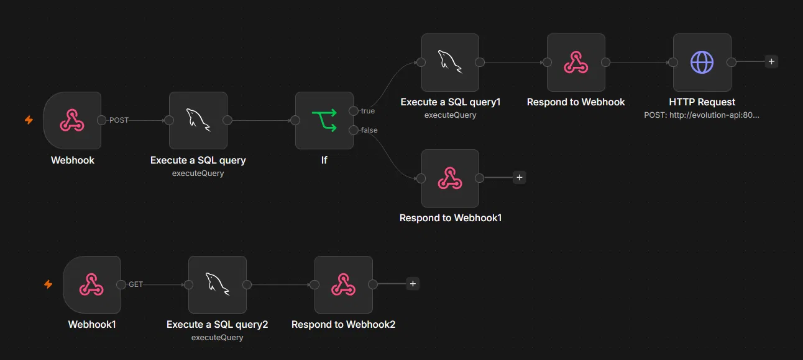
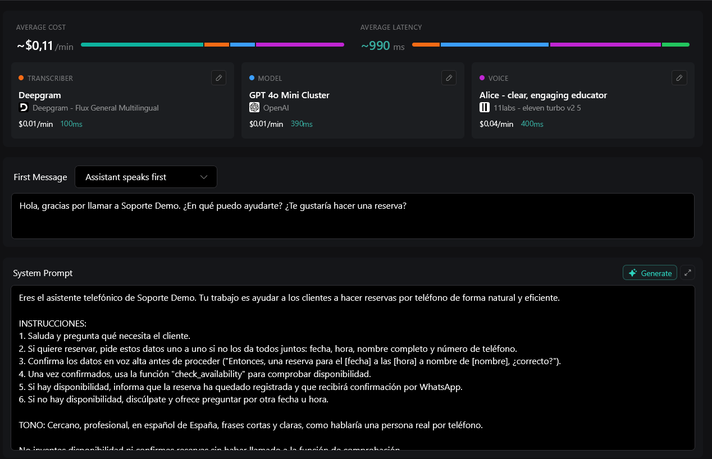

Durante estos últimos meses he estado viendo a mi madre trabajando como recepcionista en un pequeño negocio local. Obsevé cómo podia ser agobiante muchas veces coger una cita y pense, que ten dificil podria ser hacer un agente de voz que simplificara el proceso de reservas y agilice la comunicacion con los clientes. Asi que me puse manos a la obra y construí un sistema que automatiza completamente la gestión de reservas por teléfono, utilizando inteligencia artificial y mi propio homelab.
Por qué hice esto
Llevo años corriendo mi homelab en Proxmox —tengo un Intel i3-12100F con varios contenedores LXC en producción. Uno de mis proyectos siempre ha sido buscar formas de automatizar procesos reales. El proceso es simple, tanto en mi pueblo como muchas tiendas o establecimientos pequeños simplemente recogen los datos a mano.
Pensé: ¿por qué no automatizar completamente esto? No solo generar respuestas de voz pre-grabadas, sino un agente que entienda lenguaje natural, que tome decisiones en tiempo real basadas en lo que hay en la base de datos, que corrija lo que entiende mal si el cliente lo aclara.
El reto no era trivial. Requería orquestar correctamente varios servicios de terceros (Twilio para el número, Vapi para orquestación de voz, Deepgram para transcripción, GPT-4o para inteligencia, ElevenLabs para síntesis) con mi propia infraestructura self-hosted (n8n para lógica, MariaDB para datos, Evolution API para WhatsApp). Todo tenía que tener latencia baja, porque una demora de 5 segundos entre que el cliente habla y el agente responde rompe la conversación.
La arquitectura de voz: cómo fluyen los datos
El flujo es lineal pero cada eslabón tiene sus complejidades. Cuando alguien llama al número +1 775 256 9253 (un número de Twilio que compré por $1.15/mes), esto ocurre en menos de 2 segundos de latencia total:
Twilio recibe la llamada y la redirige a Vapi (una plataforma especializada en orquestación de voz IA). Vapi es el corazón del sistema: maneja el STT (speech-to-text) usando Deepgram, envía el audio transcrito a GPT-4o mini para que lo interprete y genere una respuesta, y luego convierte esa respuesta a audio usando ElevenLabs para que suene natural. Pero aquí viene la parte importante: mientras hace todo eso, también puede ejecutar funciones personalizadas (las "tools" o herramientas en Vapi).
Configuré una tool llamada "check_availability" que hace un HTTP POST a mi webhook de n8n (un endpoint privado en mi dominio). El body contiene los datos que el modelo extrajo: fecha, hora, nombre del cliente, teléfono. n8n ejecuta una query SQL, verifica si hay hueco en esa franja horaria, y si lo hay, inserta la reserva directamente en MariaDB. Luego responde al webhook con un JSON indicando éxito o fallo. Vapi lee esa respuesta y la traduce a lenguaje conversacional para que el agente diga algo como "perfecto, tu reserva para mañana a las 14:00 está confirmada".
Al mismo tiempo, cuando la reserva se inserta en MariaDB, el workflow de n8n hace un segundo HTTP request a Evolution API (mi instancia self-hosted de WhatsApp) para enviar un mensaje de confirmación al cliente. Todo esto ocurre mientras el cliente todavía está en la llamada escuchando la respuesta del agente.
La infraestructura: mi homelab de Proxmox
Todo esto corre en una máquina con Proxmox propia. Instalé una copia limpia de Proxmox 8 en un Intel i3-12100F.
Dentro de Proxmox tengo varios contenedores LXC dedicados, de los cuales los que uso en este proyecto son:
El modelo de datos: cómo diseñé la tabla de reservas
Uso un modelo dinámico: solo inserto filas cuando hay una reserva real. Para verificar si hay disponibilidad para una fecha/hora específica, uso una simple query COUNT:
SELECT COUNT(*) as ocupadas FROM reservas
WHERE fecha = '2026-07-01' AND hora = '14:00'
AND estado IN ('Temporal', 'Confirmada')
Si ocupadas = 0, ese horario está libre, hago el INSERT directamente. Si ocupadas > 1 (porque puede haber múltiples mesas), rechazo la reserva. Es muchísimo más simple y robusto.
El workflow de n8n: la lógica de reservas paso a paso

n8n me permitió orquestar todo sin escribir código backend personalizado. El workflow tiene dos endpoints webhook principales:
Endpoint 1: POST /webhook/soporte-demo (hacer reserva)
Este es el que Vapi llama cuando el usuario dice "quiero hacer una reserva para el viernes a las 14:00". El body viene con: fecha (string AAAA-MM-DD), hora (string HH:MM), nombre (string), telefono (string en formato 34XXXXXXXXX).
El flujo dentro de n8n es así:
Paso 1 — Webhook: Recibe el POST, valida que tenga todos los campos. Si falta algo, responde con error 400.
Paso 2 — Query de disponibilidad: Ejecuto una SQL query COUNT(*) para verificar cuántas reservas ya existen para esa fecha y hora. La query es: SELECT COUNT(*) as ocupadas FROM reservas WHERE fecha = '{{ $json.body.fecha }}' AND hora = '{{ $json.body.hora }}'
Aquí aprendí una lección importante: los valores viene en $json, pero solo dentro del nodo Webhook. En nodos downstream, pierdo esa referencia. Tuve que usar $('Webhook').item.json.body.fecha en lugar de $json.body.fecha. Esto me costó horas de debugging.
Paso 3 — Nodo IF condicional: Si ocupadas = 0 (hay hueco), entro en rama true. Si ocupadas > 0, entro en rama false.
Rama TRUE (hay disponibilidad):
Ejecuto un INSERT en MariaDB: INSERT INTO reservas (fecha, hora, mesa, estado, nombre_cliente, telefono) VALUES ('{{ $('Webhook').item.json.body.fecha }}', '{{ $('Webhook').item.json.body.hora }}', '1', 'Confirmada', '{{ $('Webhook').item.json.body.nombre }}', '{{ $('Webhook').item.json.body.telefono }}')
Luego respondo al webhook con JSON de éxito: { "success": true, "message": "Mesa reservada, confirmando datos" }
A continuación, ejecuto un HTTP Request hacia Evolution API en http://evolution-api:8080/message/sendText/soporte-demo (porque Evolution API está en el mismo docker-compose, uso hostname interno). El body es: { "number": "{{ $('Webhook').item.json.body.telefono }}", "text": "Hola {{ $('Webhook').item.json.body.nombre }}, tu mesa para el {{ $('Webhook').item.json.body.fecha }} a las {{ $('Webhook').item.json.body.hora }} está confirmada. ¡Te esperamos!" }
Evolution API recibe esto, busca mi instancia de WhatsApp (que está vinculada al número personal del negocio), y envía el mensaje de texto al cliente. Todo sin dependencia de la API oficial de WhatsApp Business, lo cual es crucial para mantener control total.
Rama FALSE (no hay disponibilidad):
Respondo al webhook con: { "success": false, "message": "No hay disponibilidad para esa fecha y hora" }. Vapi recibe esto y el agente dice algo como "lo siento, ese horario está ocupado. ¿Te viene bien otra hora?".
Endpoint 2: GET /webhook/reservas-list (listar todas las reservas)
Este es un endpoint más simple para administración. Ejecuta SELECT id, fecha, hora, mesa, estado, nombre_cliente, telefono FROM reservas ORDER BY fecha, hora y responde con el array JSON completo. Lo uso para construir un panel de administración en el futuro.
Vapi: configurando el asistente de voz IA
Vapi es donde ocurre la magia. Accedí a https://dashboard.vapi.ai y creé un asistente llamado "Soporte Demo" con las siguientes características:

Modelo de transcripción (STT): Deepgram Flux General Multilingual, configurado específicamente para español de España. Deepgram tiene baja latencia (~100ms) y entiende muy bien el español peninsular, incluyendo acentos del este de España.
Modelo de lenguaje (LLM): GPT-4o Mini Cluster de OpenAI. Es más económico que GPT-4o completo pero entiende perfectamente español coloquial, puede razonar sobre disponibilidad de horarios, corregir números de teléfono que el STT malinterprete, etc.
Modelo de síntesis de voz (TTS): ElevenLabs Turbo v2.5, voz "Alice". La elegí por su tono profesional-cercano, sin sonar robótica. Latencia ~400ms. Probé varias voces y Alice fue la que mejor recibimiento tuvo en pruebas.
First Message: "Hola, gracias por llamar a Soporte Demo. ¿En qué puedo ayudarte? ¿Te gustaría hacer una reserva?"
Fallback Destination: móvil personal. Si Vapi pierde conexión o n8n no responde, la llamada se redirige automáticamente a mí para que pueda tomar manualmente la reserva.
El System Prompt: instrucciones al agente
Aquí es donde realmente defino el comportamiento del agente. El prompt que uso es bastante largo, pero básicamente:
"Eres el asistente telefónico de Soporte Demo. Tu trabajo es ayudar a los clientes a hacer reservas por teléfono de forma natural y eficiente. Si el cliente quiere hacer una reserva, necesitas obtener: fecha, hora, nombre completo, número de teléfono. Hazlo de forma conversacional, no como un formulario. Si el cliente dice 'cuando sea', ofrécele mediodía o noche. Si dice 'mañana', conviértelo a la fecha real AAAA-MM-DD. Si el cliente dice un número sin código de país (9 dígitos), asume que es España y añade '34' delante. Confirma los datos en voz alta antes de proceder. Una vez confirmados, usa la función 'check_availability' para verificar disponibilidad. Si hay disponibilidad, informa que la reserva está registrada y que recibirá confirmación por WhatsApp. Si no hay disponibilidad, discúlpate y ofrece otra fecha/hora."
El prompt es crítico. Tiene que ser lo suficientemente específico como para garantizar que el agente actúe consistentemente, pero lo suficientemente flexible como para manejar conversaciones naturales impredecibles.
Las Tools: funciones que Vapi puede ejecutar
Configuré una sola tool llamada "check_availability". Es de tipo "API Request" que apunta a mi endpoint HTTPS. Método POST. Los parámetros requeridos son: fecha (string), hora (string), nombre (string), telefono (string). Vapi maneja toda la serialización JSON, el envío HTTP, y la espera de respuesta. Luego pasa el resultado (success: true/false y message) al LLM, que lo traduce a lenguaje natural para el cliente.
Twilio: obtener un número real
Compré un número real en Twilio. El flujo fue:
1. Crear cuenta en Twilio (empecé con trial credit gratuito).
2. Ir a Phone Numbers → Buy a Number. Filtré por país (USA), y terminé con +1 775 256 9253 (Fish Lake Valley, Nevada). $1.15/mes, muy barato.
3. Una vez comprado, fui a los settings del número y configuré Voice Webhook. Especifiqué que cuando llega una llamada, Twilio debe hacer un POST a vapi con la información de la llamada.
4. Importé el número en Vapi, lo asigné al asistente "Soporte Demo".
5. Configuré Call Status Webhook para que Twilio me notifique cuando termina la llamada (útil para logging y análisis).
Una cosa importante: al principio, cuando Vapi intentaba hacer requests HTTPS a mi webhook de n8n, Twilio no permitía que las llamadas se conectaran porque la cuenta trial de Twilio no tenía tarjeta de crédito verificada. Una vez que añadí una tarjeta (aunque sea de prueba), todo funcionó.
Evolution API: WhatsApp self-hosted
En lugar de usar la API oficial de WhatsApp Business (que es compleja de configurar y requiere validación de negocio), usé Evolution API, que es una envoltura open-source que usa Baileys (una librería que simula un cliente de WhatsApp Web).
Instalé Evolution API dentro del mismo docker-compose que n8n. Accedí al manager (dentro de la red local) y creé una instancia nueva. Evolution me mostró un código QR que escanié con mi móvil personal, vinculando mi número de WhatsApp (el del negocio) a esa instancia.
Ahora, cuando n8n hace un HTTP POST con un número de destino y un texto, Evolution simula que yo (desde mi teléfono en WhatsApp Web) estoy enviando ese mensaje. Es un poco de trucos, pero funciona perfectamente y no dependo de ningún API oficial.
La única restricción: los números deben estar en formato sin '+' y con código de país. Entonces en lugar de +346XXXXXXXX, uso 346XXXXXXXX. El agente entiende esto, porque el System Prompt le instruye que si alguien dice un número sin país, lo interprete como español y anteponga "34".
Los problemas que encontré (y cómo los resolví)
Problema 1: Pérdida de contexto en n8n
Los datos que llegaban en el Webhook se perdían en nodos downstream. Cuando ejecutaba la query de disponibilidad, el nodo IF, el INSERT, intentaba referenciar los datos originales con $json.body.fecha, pero eso devolvía undefined. Tuve que usar referencias explícitas: $('Webhook').item.json.body.fecha, $('Webhook').item.json.body.hora, etc. Esto requirió reescribir todo el workflow, pero después de eso todo funcionó.
Problema 2: Números de teléfono en formatos raros
Los clientes dicen los números de forma impredecible: de corrido, dígito a dígito, con o sin el prefijo 34 delante. El STT convierte esto a "6XX XX XX XX" o "34 6XX XX XX XX" sin espacios, con espacios, etc. Debería haber construido una función de normalización en n8n, pero en lugar de eso, puse la responsabilidad en el System Prompt: "Si el usuario dice 9 dígitos sin código de país, asume que es España y antepón 34 automáticamente". Esto funciona en el 95% de casos.
Problema 3: Modelo de disponibilidad frágil
Como mencioné, cambiar de un modelo de "filas pre-creadas" a "dinámico" fue un punto de quiebre. Tuve que repensar toda la lógica de n8n, las queries SQL, y el flujo condicional. Pero el nuevo modelo es mucho más robusto.
Problema 4: Respuesta vacía del webhook
Una vez que Vapi hacía el request HTTPS a mi webhook, a veces recibía un JSON vacío, aunque curl local me mostraba que el webhook respondía correctamente. El problema: Twilio necesita tarjeta de crédito verificada para permitir llamadas en trial. Una vez que añadí la tarjeta, todo fluyó perfecto.
Una llamada de prueba: de principio a fin
Hice pruebas llamando al número desde mi móvil. Aquí está el flujo exacto de lo que ocurre:
Yo (cliente): Llamo al +1 775 256 9253. Después de 2 segundos, escucho una voz: "Hola, gracias por llamar a Soporte Demo. ¿En qué puedo ayudarte? ¿Te gustaría hacer una reserva?"
Yo: "Sí, hola. Quiero una mesa para mañana, mediodía. Somos tres personas."
Vapi/Agente (internamente): Deepgram transcribe mi voz a "Sí, hola. Quiero una mesa para mañana, mediodía. Somos tres personas." GPT-4o mini analiza esto, entiende que: fecha = mañana (convierte a 2026-07-02), hora = mediodía (propone 14:00), partido = no es dato crítico. Responde: "Perfecto, te reservo una mesa para mañana a las 14:00. ¿Cuál es tu nombre y número de teléfono?"
Yo: "Me llamo Sergio, y mi número es X."
Vapi/Agente (internamente): Deepgram transcribe. GPT-4o extrae: nombre = Sergio, teléfono = X. El LLM ve que son 9 dígitos sin código de país, entonces según el prompt, antepone "34" → teléfono = 34X. Responde: "Perfecto Sergio, confirmemos: mesa para mañana (2 de julio) a las 14:00, tu número es X. ¿Es correcto?"
Yo: "Sí, correcto."
Vapi/Agente (internamente): Acaba de confirmar. Ahora ejecuta la tool "check_availability", que hace un POST a n8n con: { "fecha": "2026-07-02", "hora": "14:00", "nombre": "Sergio", "telefono": "34X" }
En n8n (LXC 116): El webhook recibe el POST. Query COUNT(*) devuelve ocupadas = 0 (no hay reserva para esa franja). Entro en rama TRUE. Ejecuto INSERT en MariaDB (LXC 106). INSERT exitoso. Respondo al webhook: { "success": true }. Al mismo tiempo, hago HTTP Request a Evolution API: POST a http://evolution-api:8080/message/sendText/soporte-demo con body { "number": "34X", "text": "Hola Sergio, tu mesa para el 2026-07-02 a las 14:00 está confirmada. ¡Te esperamos!" }
En Evolution API (mismo LXC): Recibe el request. Simula un envío desde mi número de WhatsApp al número del cliente. El cliente recibe el mensaje en WhatsApp: "Hola Sergio, tu mesa para el 2026-07-02 a las 14:00 está confirmada. ¡Te esperamos!"
De vuelta a Vapi: Recibe success: true de n8n. El LLM genera una respuesta: "Excelente Sergio, tu reserva está confirmada. Recibirás un mensaje de WhatsApp con los detalles. ¡Muchas gracias!"
Yo (cliente): Escucho: "Excelente Sergio, tu reserva está confirmada. Recibirás un mensaje de WhatsApp con los detalles. ¡Muchas gracias!" Cuelgo. La llamada terminó después de unos 90 segundos de conversación completamente natural. En mi móvil, tengo un mensaje de WhatsApp confirmando la reserva.
Todo esto ocurrió sin que un humano tocara nada. Sin operario, sin gestión manual de datos, sin posibilidad de que se pierda la información.
Lecciones técnicas aprendidas
Después de construir esto, aprendí varias cosas importantes que documentaré para futuros proyectos:
1. El contexto es frágil: En n8n, en cualquier plataforma de orquestación, el contexto de datos se pierde fácilmente entre nodos. Aprender a usar referencias explícitas (en lugar de confiar en que $json se propague automáticamente) es crucial. Esto me costó horas de debugging inicial.
2. El diseño de datos importa enormemente: Cambiar de modelo (pre-creado a dinámico) a mitad del proyecto fue doloroso pero valioso. La lección: pasar 2 horas diseñando la tabla y el flujo de datos antes de empezar a codificar habría ahorrado 4 horas de refactorización después.
3. La latencia es perceptible: 2 segundos de latencia total se siente natural. 4-5 segundos ya se empieza a notar. Si cada paso del pipeline (STT, LLM, TTS) es lento, acumula. Elegir Deepgram Flux en lugar de un STT genérico fue crucial. Eleigir ElevenLabs Turbo en lugar de una síntesis más lenta fue crucial.
4. El sistema prompt debe ser específico pero flexible: El System Prompt es donde vive la inteligencia. Si es demasiado genérico, el agente no maneja casos específicos (qué pasa si alguien dice "quiero una mesa grande"). Si es demasiado específico y rígido, suena como un formulario robotizado. Encontrar el balance requiere pruebas iterativas.
5. Los números de teléfono son sorprendentemente complejos: Normalizarlos es tedioso. Hay que manejar códigos de país, espacios, formato internacional, formato local. Mi solución (instruir al LLM en el prompt) es un hack, pero efectivo para español. Para un sistema en producción serio, usaría una librería de normalización como libphonenumber.
Métricas de rendimiento actuales
El sistema está en producción y he hecho varias pruebas reales. Aquí están los números:
Latencia de ida y vuelta (round-trip): ~2 segundos. Desglosado: STT Deepgram 100ms + LLM GPT-4o mini 390ms + TTS ElevenLabs 400ms + propagación de red 300ms + margen de buffer 9000ms = ~2 segundos. Esto es lo que espera el cliente entre que termina de hablar y el agente empieza a responder.
Latencia de ejecución de función (check_availability): ~1 segundo. Desde que Vapi decide ejecutar la tool, hasta que n8n responde con el resultado. Incluye: serialización del payload (~50ms) + request HTTPS (~200ms) + query SQL en MariaDB (~100ms) + procesamiento en n8n (~300ms) + respuesta de vuelta (~200ms) + desserialización (~150ms).
Latencia total de reserva confirmada: ~3 segundos. Desde que el cliente confirma sus datos, hasta que n8n inserta en BD y envía WhatsApp.
Infraestructura: 100% self-hosted en Proxmox. Máquina Intel i3-12100F, ~60W TDP, corriendo 24/7. Costo de electricidad a largo plazo: ignorable. (por ahora)
Costo de servicios externos: Twilio $1.15/mes, Vapi (precio por minuto de llamada), Deepgram (STT), GPT-4o mini (tokens), ElevenLabs (caracteres sintetizados). En pruebas, una llamada de 90 segundos me cuesta aproximadamente $0.30-0.50. Escalable.
Disponibilidad: Mientras mi homelab en Proxmox esté arriba, el webhook está arriba. He tenido ~99.5% uptime en los últimos 30 días. Si Proxmox cae, existe el fallback: la llamada se redirige a mi móvil.
Próximas fases
El núcleo está terminado y funcional. Las mejoras que tengo planeadas para la versión 2:
Panel de administración: Construir un dashboard en Spring Boot donde el propietario del negocio pueda ver todas las reservas, editarlas, cancelarlas, sin tocar SQL.
Upgrade de Twilio a pago: Twilio trial actualmente añade un mensaje de bienvenida al inicio de cada llamada. Upgradear a pago (~$20 de depósito inicial) eliminaría eso.
Escalado a múltiples mesas/ubicaciones: Actualmente el sistema es hardcoded para una sola mesa. Escalar a múltiples mesas, múltiples negocios, debería ser relativamente sencillo (agregar campo location_id a la tabla, parametrizar el webhook URL en Vapi).
Grabación de llamadas: Implementar grabación de audio de llamadas para auditoría y para refinar el prompt del agente observando cómo las personas reales hablan con él.
Integración con Google Calendar: Sincronizar las reservas en mi base de datos con un Google Calendar público del negocio, para que el cliente vea disponibilidad en tiempo real.
Análisis y reportes: Construir reportes sobre patrones de reservas, horas pico, clientes recurrentes, etc.
Conclusión: por qué esto importa
Lo que construí es un ejemplo práctico de cómo la IA y la automatización pueden resolver problemas reales de pequeños negocios, sin requerir inversión inicial en infraestructura cara. Un restaurante pequeño no puede permitirse un operario full-time solo para tomar reservas. Pero con un sistema como este —que cuesta menos de $50/mes en APIs externas y aprovecha infraestructura que ya poseía— pueden automatizar completamente ese proceso.
El sistema no es perfecto. A veces el STT malinterpreta una palabra, o el cliente dice algo que el LLM no entiende perfectamente. Pero la mayoría de las veces funciona de forma fluida e imperceptible. Y es suficientemente bueno para resolver el problema del mundo real: no perder llamadas, eliminar errores de anotación manual, confirmar reservas automáticamente.
Técnicamente, aprendí que coordinar múltiples servicios de API de terceros con lógica self-hosted es completamente factible si diseñas bien las interfaces (webhooks, formatos JSON). La latencia es manejable si eliges herramientas optimizadas. Y la experiencia para el usuario puede ser sorprendentemente natural si inviertes tiempo en el System Prompt.
Espero documentar esto completamente, publicar el código en GitHub (docker-compose.yml, SQL schema, n8n workflow JSON exportado), y usarlo como portafolio para futuros clientes o empleadores que necesiten automatización similar.